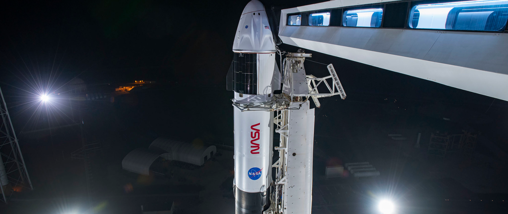
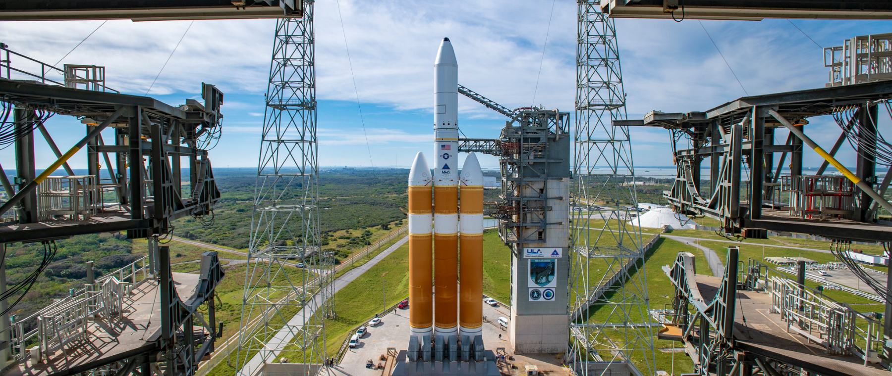
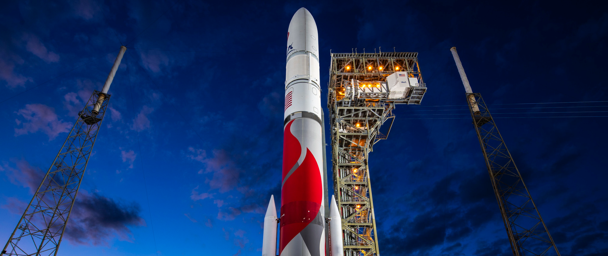
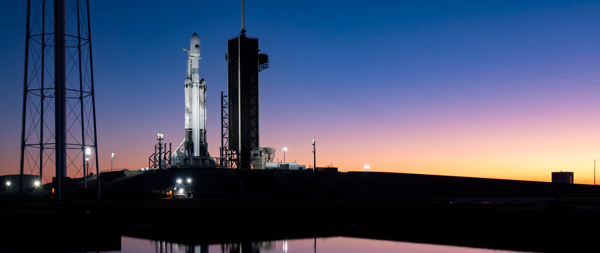
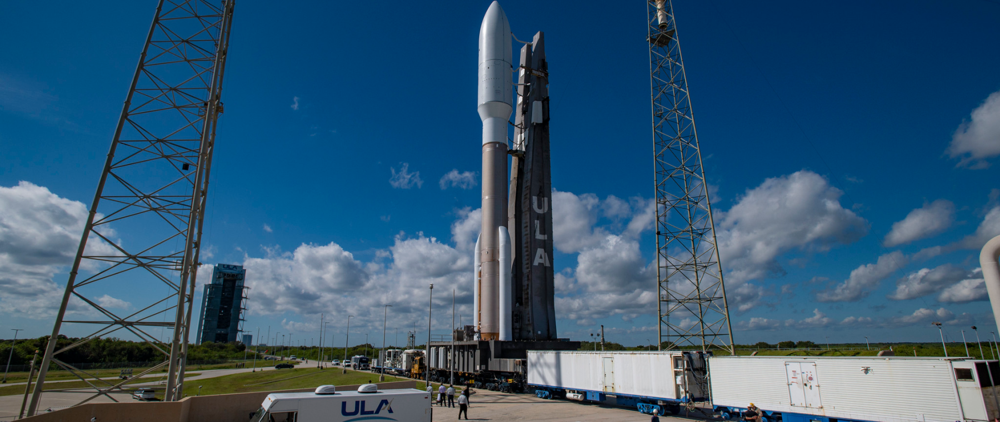

March 25 - Falcon 9 - Polaris down
18:00 UTC
LC-39A KSC
A SpaceX Falcon 9 rocket will launch a Crew Dragon spacecraft. The Polaris Dawn mission will be commanded by billionaire Jared Isaacman, making his second trip to space. He will be joined on the all-private mission by pilot Scott “Kidd” Poteet, and SpaceX employees Sarah Gillis and Anna Menon. The Crew Dragon will return to a splashdown at sea. Delayed from November and December 2022, March 2023 and April 2024.

March 28 - Delta 4-Heavy - NROL-70
02:00 UTC
SLC-37B SFS
A United Launch Alliance Delta 4-Heavy rocket will launch a classified spy satellite cargo for the U.S. National Reconnaissance Office. The largest of the Delta 4 family, the Heavy version features three Common Booster Cores mounted together to form a triple-body rocket. This is the final flight of a Delta 4 rocket.

April 15 - Vulcan centaur - Dream Chaser 1
15:00 UTC
SLC-41 SFS
A United Launch Alliance Vulcan Centaur rocket will launch on its second demonstration flight with Sierra Space’s Dream Chaser cargo vehicle for the International Space Station. The Dream Chaser is a lifting body resupply spacecraft that will launch on top of a rocket and land on a runway. This will be the Dream Chaser’s first flight to space. The Vulcan Centaur rocket will fly in the VC4L configuration with four GEM-63XL solid rocket boosters, a long-length payload fairing, and two RL10 engines on the Centaur upper stage

April 30 - Falcon Heavy - GOES U
22:00 UTC
LC-39A KSC
A SpaceX Falcon Heavy will launch the fourth and final satellite of the next-generation series of geostationary weather satellites for NASA and NOAA. GOES-U will orbit 22,300 miles above the equator to monitor weather conditions across the United States. The satellite will be renamed GOES-19 once it reaches its operational orbit.

May 1 - Atlas 5 - CST-100 Starliner Crew Flight Test
16:00 UTC
SLC-41 SFS
A United Launch Alliance Atlas 5 rocket, designated AV-085, will launch Boeing’s CST-100 Starliner spacecraft on its first mission with astronauts, known as the Crew Test Flight, to the International Space Station. The capsule will dock with the space station, then return to Earth to landing in the Western United States. NASA astronauts Butch Wilmore and Suni Williams will fly on the mission. The rocket will fly in a vehicle configuration with two solid rocket boosters and a dual-engine Centaur upper stage. Delayed from August and 1st Quarter of 2020.